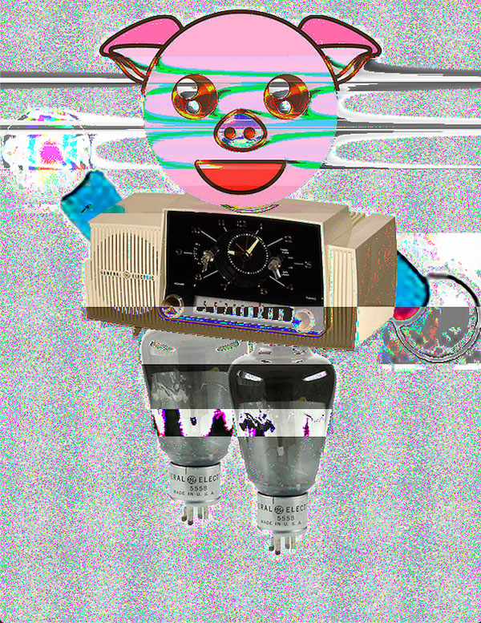
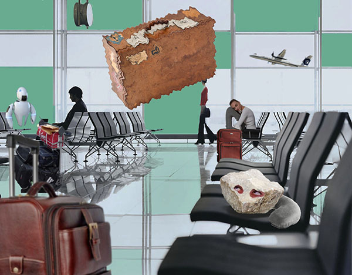
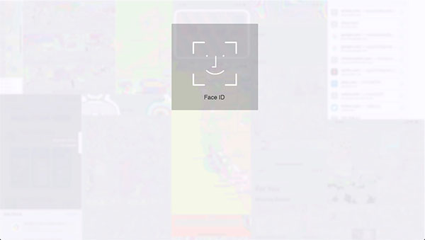
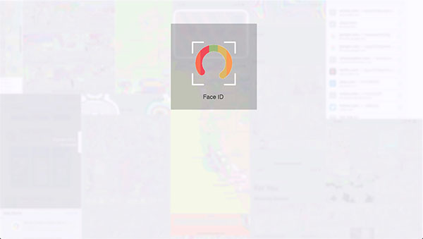
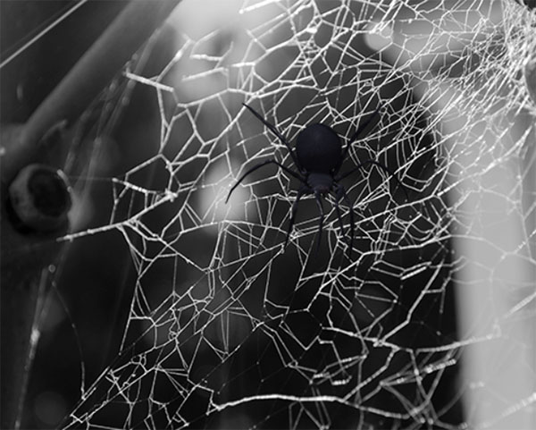

CyporG, Digital Image, 2019
This glitch assignment was one of the first digital works that I ever created. I was hoping to make the original composite image less plain and overall more exciting using Audacity. The cherry on top was experimenting with which section of the audio contained the info for the face of the pig and finding that the Phaser effect would create such an interesting/spooky look.

The Persistence of Vacation, Digital Image, 2019
The original concept for this digital composite image was the idea of vacation for my group's place series. My group and I wanted to have a rock traveling. For my piece, I wanted to shine some light on the common stresses of traveling associated with going anywhere, especially when going on vacation. The distorted floating suitcase can represent when luggages get lost in transit, while the rock is eye rolling due to the unfortunate circumstances.
You can also link to images using the 'img' tag.
Home, Digital Sound, 0:59, 2019
This audio composite consists of sounds gathered from my family home in Fairfield, CA. I took the sounds of our toaster oven, the crinkling of a small tissue packet, and the general sounds of my house from the second floor that consisted of distant voices and the rhythmic sounds of the laundry machine.
Hide Out, Digital Video, 1:00, 2019
"Hide Out" is a video based on the concept of my own inner battle with dealing with grief and being physically separated from the place where I needed to be instead of at school: home. The audio was all recorded at my family's home in Fairfield, while the video footage was taken here on campus. The flashing images of my grandma and the audio represented my inner thoughts while being here at school during this time of sadness.



The Gallery: Log In?, Interactive Net Art, 2019
This Interactive Net Art piece was my take on the original group project concept of Data as Self Portrait. I wanted to create a website that mimicked the way that our faces are the key to our personal data in today's technology. The viewer clicks through a facial recognition system and reveals a composite of glitched screenshots from my personal phone.

Spider Solitaire, Interactive Net Art using p5.js, 2019
For this Code as Art project, I was inspired by a photo that I took last year of a spiderweb. It reminded me of how my 94 year old grandma plays the game, Spider Solitaire, everyday on a laptop. It is her only interaction with a computer, but this singular relationship with this laptop has helped her mind stay extremely sharp throughout the years. I wanted pay homage to my grandma's love for this game, but also make it fun, interactive, and a little creepy by adding a lot of spiders to the piece while clicking down. I used interactive techniques from the p5.js site to utilize different tracking speeds of the spiders in relationship to the mouse.